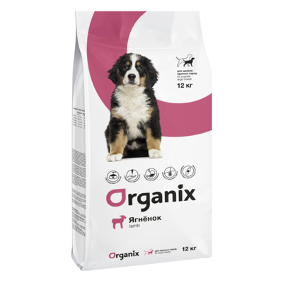

Часто это отходы производства продуктов питания для человека: то, что не имеет «товарного вида», или, например, не может быть пущено в переработку по каким-то санитарным нормам. Кроме того, широко используются субпродукты, которые вкусны и привычны для наших домашних хищников. Все компоненты кормов обрабатываются так, чтобы быть достаточно безопасными: и чем выше класс корма, тем выше качество и безопасность его составляющих. Также важные компоненты кормов – витамины и антиоксиданты, которые теряются из сырья при переработке. Поэтому производители восполняют потери специальными добавками.
Цена: 100 грн
Мы прекрасно знаем, как приятно видеть своего питомца бодрым и здоровым. Но в условиях городской среды довольно не просто оставаться полным энергии и сил. Именно поэтому рецепты кормов Organix, созданные из натуральных ингредиентов, были разработаны профессионалами для долгой и счастливой жизни вашего питомца.
Описание
Описание